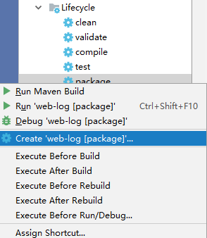
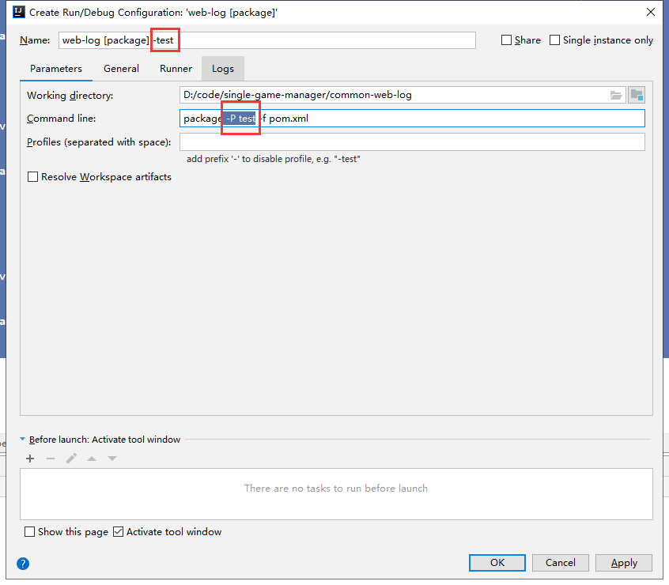
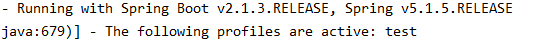

<!DOCTYPE html>
<html lang class="loading">
<head><meta name="generator" content="Hexo 3.8.0">
    <meta charset="UTF-8">
    <meta http-equiv="X-UA-Compatible" content="IE=edge,chrome=1">
    <meta name="viewport" content="width=device-width, minimum-scale=1.0, maximum-scale=1.0, user-scalable=no">
    <title>SpringBoot多启动环境的项目配置 - Linco</title>
    <meta name="apple-mobile-web-app-capable" content="yes">
    <meta name="apple-mobile-web-app-status-bar-style" content="black-translucent">
    <meta name="google" content="notranslate">
    <meta name="keywords" content="Linco, Blog,"> 
    <meta name="description" content="springboot可以在启动是通过启动参数选择配置文件, 首先,在application同目录下创建其他配置

这里创建了dev和test两个环境的配置文件, 用的是yml格式, 如果用prope,"> 
    <meta name="author" content="Linco"> 
    <link rel="alternative" href="atom.xml" title="Linco" type="application/atom+xml"> 
    <link rel="icon" href="/img/icon.png"> 
    <link rel="stylesheet" href="//cdn.jsdelivr.net/npm/gitalk@1/dist/gitalk.css">
    <link rel="stylesheet" href="/css/diaspora.css">

</head>
</html>
<body class="loading">
    <span id="config-title" style="display:none">Linco</span>
    <div id="loader"></div>
    <div id="single">
    <div id="top" style="display: block;">
    <div class="bar" style="width: 0;"></div>
    <a class="icon-home image-icon" href="javascript:;" data-url></a>
    <div title="播放/暂停" class="icon-play"></div>
    <h3 class="subtitle">SpringBoot多启动环境的项目配置</h3>
    <div class="social">
        <!--<div class="like-icon">-->
            <!--<a href="javascript:;" class="likeThis active"><span class="icon-like"></span><span class="count">76</span></a>-->
        <!--</div>-->
        <div>
            <div class="share">
                <a title="获取二维码" class="icon-scan" href="javascript:;"></a>
            </div>
            <div id="qr"></div>
        </div>
    </div>
    <div class="scrollbar"></div>
</div>

    <div class="section">
        <div class="article">
    <div class="main">
        <h1 class="title">SpringBoot多启动环境的项目配置</h1>
        <div class="stuff">
            <span>十一月 11, 2019</span>
            
  <ul class="post-tags-list"><li class="post-tags-list-item"><a class="post-tags-list-link" href="/tags/Spring/">Spring</a></li><li class="post-tags-list-item"><a class="post-tags-list-link" href="/tags/项目应用/">项目应用</a></li></ul>


        </div>
        <div class="content markdown">
            <p>springboot可以在启动是通过启动参数选择配置文件, 首先,在application同目录下创建其他配置</p>
<p></p>
<p>这里创建了dev和test两个环境的配置文件, 用的是yml格式, 如果用properties也是一样的</p>
<p>打包后, 在启动时加入参数可以启动特定配置, 需要输入后面的环境标识</p>
<p><code>--spring.profiles.active=test</code></p>
<p>最终的结果是加载了application.yml(基本配置)和application-test.yml(环境配置)两个文件, 环境配置和基本配置会同时生效, 如果两个文件中存在相同项, 环境配置将会覆盖基本配置</p>
<p>这样每次启动都要添加参数未免太过麻烦, 万一生产环境忘记加参数要出大事. 我们可以在打包的时候控制使用的配置文件, spring中称为profile</p>
<p>在application.yml添加如下配置</p>
<figure class="highlight yaml"><table><tr><td class="gutter"><pre><span class="line">1</span><br><span class="line">2</span><br><span class="line">3</span><br></pre></td><td class="code"><pre><span class="line"><span class="attr">spring:</span></span><br><span class="line"><span class="attr">  profiles:</span></span><br><span class="line"><span class="attr">    active:</span> <span class="string">test</span></span><br></pre></td></tr></table></figure>
<p>像这样打出来的包默认就是test环境的, 放到对应环境直接启动就行了</p>
<p>但这样还是有问题, 每次发布不同环境都要改配置, version control 也一团糟</p>
<p>先把application.yml对应配置项改成</p>
<figure class="highlight yaml"><table><tr><td class="gutter"><pre><span class="line">1</span><br><span class="line">2</span><br><span class="line">3</span><br></pre></td><td class="code"><pre><span class="line"><span class="attr">spring:</span></span><br><span class="line"><span class="attr">  profiles:</span></span><br><span class="line"><span class="attr">    active:</span> <span class="string">@profileActive@</span></span><br></pre></td></tr></table></figure>
<p>@profileActive@引用了 profileActive 参数, 这个参数在maven中定义</p>
<p>编辑项目pom.xml, 添加内容</p>
<figure class="highlight plain"><table><tr><td class="gutter"><pre><span class="line">1</span><br><span class="line">2</span><br><span class="line">3</span><br><span class="line">4</span><br><span class="line">5</span><br><span class="line">6</span><br><span class="line">7</span><br><span class="line">8</span><br><span class="line">9</span><br><span class="line">10</span><br><span class="line">11</span><br><span class="line">12</span><br><span class="line">13</span><br><span class="line">14</span><br><span class="line">15</span><br><span class="line">16</span><br><span class="line">17</span><br><span class="line">18</span><br><span class="line">19</span><br><span class="line">20</span><br><span class="line">21</span><br><span class="line">22</span><br><span class="line">23</span><br><span class="line">24</span><br><span class="line">25</span><br><span class="line">26</span><br><span class="line">27</span><br><span class="line">28</span><br><span class="line">29</span><br><span class="line">30</span><br></pre></td><td class="code"><pre><span class="line">&lt;profiles&gt;</span><br><span class="line">   &lt;profile&gt;</span><br><span class="line">      &lt;id&gt;dev&lt;/id&gt;</span><br><span class="line">      &lt;properties&gt;</span><br><span class="line">         &lt;profileActive&gt;dev&lt;/profileActive&gt;</span><br><span class="line">      &lt;/properties&gt;</span><br><span class="line">      &lt;activation&gt;</span><br><span class="line">         &lt;activeByDefault&gt;true&lt;/activeByDefault&gt;</span><br><span class="line">      &lt;/activation&gt;</span><br><span class="line">   &lt;/profile&gt;</span><br><span class="line">   &lt;profile&gt;</span><br><span class="line">      &lt;id&gt;prod&lt;/id&gt;</span><br><span class="line">      &lt;properties&gt;</span><br><span class="line">         &lt;profileActive&gt;prod&lt;/profileActive&gt;</span><br><span class="line">      &lt;/properties&gt;</span><br><span class="line">      &lt;activation&gt;</span><br><span class="line">         &lt;activeByDefault&gt;false&lt;/activeByDefault&gt;</span><br><span class="line">      &lt;/activation&gt;</span><br><span class="line">   &lt;/profile&gt;</span><br><span class="line"></span><br><span class="line">   &lt;profile&gt;</span><br><span class="line">      &lt;id&gt;test&lt;/id&gt;</span><br><span class="line">      &lt;properties&gt;</span><br><span class="line">         &lt;profileActive&gt;test&lt;/profileActive&gt;</span><br><span class="line">      &lt;/properties&gt;</span><br><span class="line">      &lt;activation&gt;</span><br><span class="line">         &lt;activeByDefault&gt;false&lt;/activeByDefault&gt;</span><br><span class="line">      &lt;/activation&gt;</span><br><span class="line">   &lt;/profile&gt;</span><br><span class="line">&lt;/profiles&gt;</span><br></pre></td></tr></table></figure>
<p>上面代码添加了dev, test和prod三个环境, 环境名称自定, 和配置文件名对上就可以了</p>
<p>activeByDefault 保留一个为 true, 这是默认启用的配置文件</p>
<p>上面在maven中三个 profile 标签定义了三个profile, 每个profile中可以加入更多的properties, 而现在用到的参数只有 “activeByDefault” </p>
<p>编辑完成后, 用maven -P ( profile_id) 命令选择 profile 配置, 一般是打包时使用, 完整的命令是</p>
<p><code>maven -P test -f pom.xml</code></p>
<p>在idea中, 可以在运行列表创建工作项方便以后运行, 打开maven project窗口, 展开项目-&gt;lifecycle-&gt;package</p>
<p>右键 create</p>
<p></p>
<p>名称加个标识, 方便区分</p>
<p>命令里面加上 -P ( profile_id)</p>
<p>保存</p>
<p> </p>
<p>最后打包运行, 如果提示</p>
<p><code>The following profiles are active: (你的配置)</code></p>
<p>就成功了, 如图</p>
<p></p>

            <!--[if lt IE 9]><script>document.createElement('audio');</script><![endif]-->
            <audio id="audio" loop="1" preload="auto" controls="controls" data-autoplay="true">
                <source type="audio/mpeg" src="/music/default_bgm.mp3">
            </audio>
            
        </div>
        
    <div id="gitalk-container" class="comment link" data-ae="false" data-ci="978518cc439cd352dd0b" data-cs="2d89825e7db6df72d065714d6b4ac1ce1829b14e" data-r="LincoXiaoQ.github.io" data-o="LincoXiaoQ" data-a="LincoXiaoQ" data-d="false">查看评论</div>


    </div>
    
</div>


    </div>
</div>
</body>
<script src="//cdn.jsdelivr.net/npm/gitalk@1/dist/gitalk.min.js"></script>
<script src="//lib.baomitu.com/jquery/1.8.3/jquery.min.js"></script>
<script src="/js/plugin.js"></script>
<script src="/js/diaspora.js"></script>
<link rel="stylesheet" href="/photoswipe/photoswipe.css">
<link rel="stylesheet" href="/photoswipe/default-skin/default-skin.css">
<script src="/photoswipe/photoswipe.min.js"></script>
<script src="/photoswipe/photoswipe-ui-default.min.js"></script>

<!-- Root element of PhotoSwipe. Must have class pswp. -->
<div class="pswp" tabindex="-1" role="dialog" aria-hidden="true">
    <!-- Background of PhotoSwipe. 
         It's a separate element as animating opacity is faster than rgba(). -->
    <div class="pswp__bg"></div>
    <!-- Slides wrapper with overflow:hidden. -->
    <div class="pswp__scroll-wrap">
        <!-- Container that holds slides. 
            PhotoSwipe keeps only 3 of them in the DOM to save memory.
            Don't modify these 3 pswp__item elements, data is added later on. -->
        <div class="pswp__container">
            <div class="pswp__item"></div>
            <div class="pswp__item"></div>
            <div class="pswp__item"></div>
        </div>
        <!-- Default (PhotoSwipeUI_Default) interface on top of sliding area. Can be changed. -->
        <div class="pswp__ui pswp__ui--hidden">
            <div class="pswp__top-bar">
                <!--  Controls are self-explanatory. Order can be changed. -->
                <div class="pswp__counter"></div>
                <button class="pswp__button pswp__button--close" title="Close (Esc)"></button>
                <button class="pswp__button pswp__button--share" title="Share"></button>
                <button class="pswp__button pswp__button--fs" title="Toggle fullscreen"></button>
                <button class="pswp__button pswp__button--zoom" title="Zoom in/out"></button>
                <!-- Preloader demo http://codepen.io/dimsemenov/pen/yyBWoR -->
                <!-- element will get class pswp__preloader--active when preloader is running -->
                <div class="pswp__preloader">
                    <div class="pswp__preloader__icn">
                      <div class="pswp__preloader__cut">
                        <div class="pswp__preloader__donut"></div>
                      </div>
                    </div>
                </div>
            </div>
            <div class="pswp__share-modal pswp__share-modal--hidden pswp__single-tap">
                <div class="pswp__share-tooltip"></div> 
            </div>
            <button class="pswp__button pswp__button--arrow--left" title="Previous (arrow left)">
            </button>
            <button class="pswp__button pswp__button--arrow--right" title="Next (arrow right)">
            </button>
            <div class="pswp__caption">
                <div class="pswp__caption__center"></div>
            </div>
        </div>
    </div>
</div>


</html>
